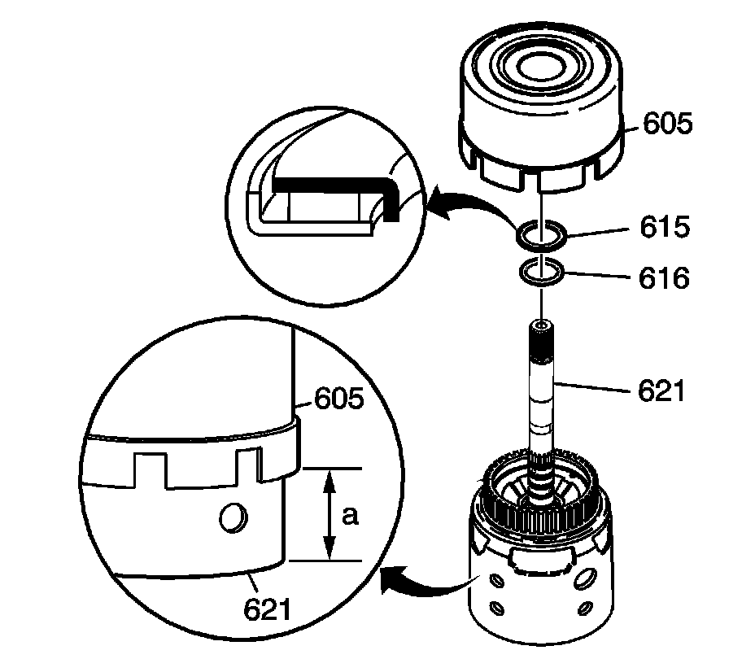

Reverse Input and Input Clutches Installation
Reverse Input and Input Clutches Installation

1. Install the selective thrust washer (616) on the input housing (621).
2. Install the stator shaft/selective washer bearing assembly (615) on the input housing (621).
The black race on the bearing goes toward the oil pump - facing up.
3. Install the reverse input clutch assembly (605) on the input housing (621).
4. Index the reverse input clutch plates with the input clutch housing. Make certain all reverse input clutch plates are fully engaged. When fully engaged, the housings will be 88.9 mm (3.5 in) apart as shown (a).
5. Install the reverse input and the input clutch assembly into the transmission case.
6. Index the 3rd and 4th clutch plates with the input internal gear.
^ Ensure that all clutch plates are fully engaged.
^ When properly assembled, the reverse input clutch housing will be located just below the case oil pump mounting face.
^ To assist assembly, hold the output shaft while rotating the input housing.
Important: The measurement from the top of the case to the top of the input clutch assembly is approximate.
7. Measure (a) from the top of the case to the top of the input clutch assembly (605). When fully engaged, the distance will be approximately 61.0 mm (2.40 in).
If the measurement is out of specification, you may not have all of the 3rd and 4th clutch plates indexed accurately.